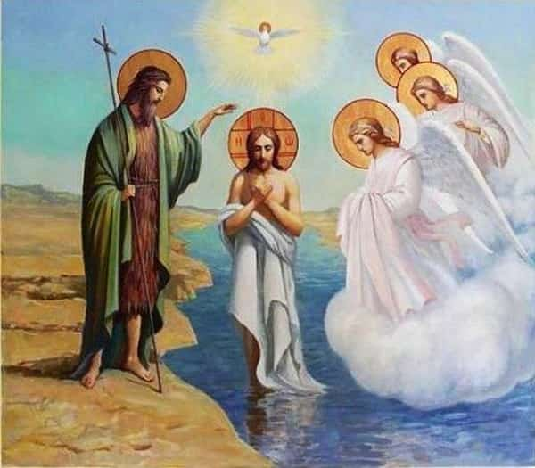
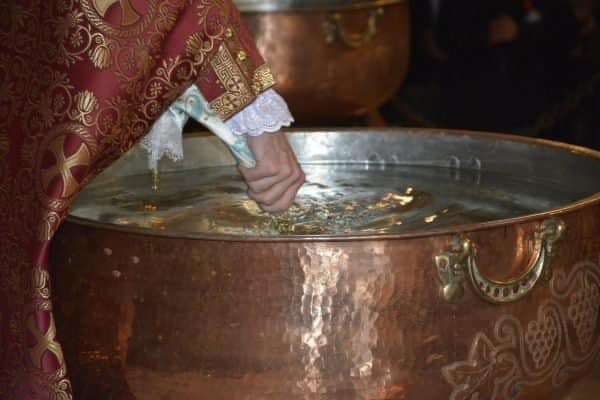
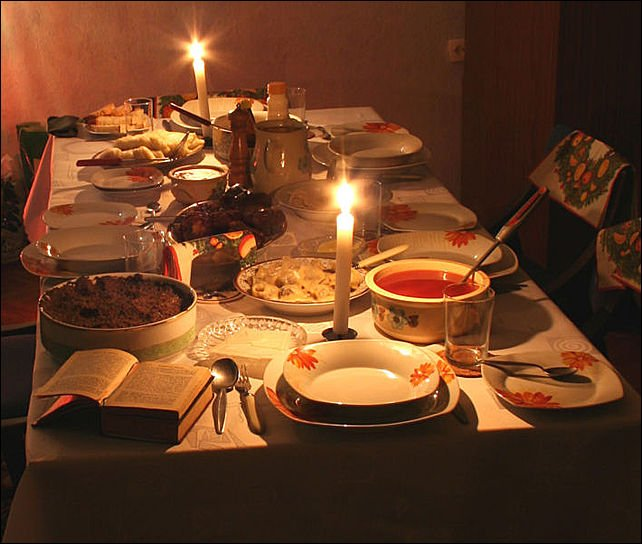

Ծնունդ (Աստվածահայտնություն)
Ջրօրհնեք (Մկրտություն)
Ծննդյան տոնը (հին անունը' Աստվածհայտնություն) Քրիստոսի ծննդյան տոնն է և : նշվում է աշխարհի բոլոր քրիստոնյա ժողովուրդների կողմից: Քրիստոնեության վաղ շրջանում այս տոնը նշում էին հունվարի 6-ին' Քրիստոսի մկրտության տոնի հետ միասին: 4-րդ դարում Հռոմի եկեղեցին որոշում ընդունեց ծննդյան տոնը նշել դեկտեմբերիին, Մկրտությունը' հունվարի 6-ին: Այս որոշումը 451թ. վավերացրեց Քաղկեդոնի ժողովը, որից հետո աշխարհի բոլոր քրիստոնյա ժողովուրդները, բացի հայերից, Ծնունդն ու Մկրտությունը նշում են անջատ-անջատ: Հայոց եկեղեցին հավատարիմ մնաց ծնունդը հունվարի 6-ին նշելու ավանդույթին և մինչև հիմա այդ օրենքը պահում է անխաթար: Նույն օրը նշվող Մկրտության տոնը խորհրդանշում է Հորդանան գետում Քրիստոսի մկրտությունը: Ուշագրավ է, որ հայ եկեղեցու պատմության հեղինակ Մ.Օրմանյանը 303թ. հունվարի 6-ը համարում է Տրդատ թագավորի և պաշտոնապես ճանաչված հայ առաջին քրիստոնյաների մկրտության օրը Բագավանում, ինչով և հայ եկեղեցու համար հունվարի 6-ի տոնը կրկնակի իմաստ է ստանում' որպես Քրիստոսի մկրտության և առաջին հայ քրիստոնյաների մկրտության տոն: Այս տոնի կատարման հանդիսակարգի վերաբերյալ հայոց եկեղեցին ունի որոշակի կանոններ, ինչպես'
- Ծննդյան և աստվածհայտնության տոնը կատարվի հունվարի 6-ին, մեծ փառքով և սաղմոսերգությամբ ու հոգևոր երգերով:
- Պետք է և արժան է Հայտնության օրը ջուր օրհնել և վրան մեռոն կաթեցնել' ի հիշատակ Քրիստոսի մկրտության:
Ահա այս վերջին հանդիսությունը նկատի ունենալով, ժողովուրդն այդ տոնն անվանել է «Ջրօրհնեք»: Հիրավի, Ծննդյան ու Մկրտության տոնը ժողովրդին հայտնի է գլխավորապես «Ջրօրհնեք» անունով, չնայած հաճախ օգտագործվում է նաև «փոքր Զատիկ» անունը: Հայ ժողովրդի կենցաղում Ծննդյան տոնի հանդիսությունները պտտվում էին նախ և առաջ եկեղեցական ծիսակարգի շուրջը: Բայց և այնպես դրանց միահյուսվել էին որոշ ժողովրդական սովորույթներ, որոնք տոնին մասնակիորեն հաղորդում էին ժողովրդական բնույթ: Ծննդյան տոնին նախորդող շաբաթը պաս էր ու չնայած այդ շաբաթվա մեջ էր ընկնում հունվարի 1-ի Նոր տարվա տոնը, հայերը, ինչպես տեսանք, խստորեն հետևելով պասերին բնորոշ կերակրատեսակներ օգտագործելու կանոնին, նույնիսկ Նոր տարվա տոնին չէին գործածում մսեղեն, կաթնեղեն, յուղ և կենդանական ծագում ունեցող ա յլ մթերքներ: Այդ նույն շաբաթ խստորեն արգելված էր գիշերն աշխատել, «այլապես Քրիստոսը կբարկանար»: Իսկ շատ տեղեր առհասարակ որոշ տեսակի աշխատանքներ չէին անում, ինչպես' բուրդ գզել, ճախարակ մանել, բամբակ գզել: Վանում բացառիկ կարևորություն տալով Ծննդյան տոնին, անհրաժեշտ էին գտնում, որ ընտանիքի բոլոր ա նդամները նոր զգեստ ունենան, առնվազն' գոնե մի նոր շապիկ, այլա պես' «Զատիկը կծրտի»: Հաստատված ավանդույթի համաձայն , հունվարի 1-ից մինչև հունվարի 6-ը օջախներում կրակը անմար էբ մնում, ինչը այդ երկու տոներին հաղորդում էր որոշակի անընդհատություն: Հունվարի 5-ին եկեղեցում տեղի էր ունենում Ծննդյան ժամերգությունը , որին ներկա էին միայն տղամարդիկ: Միայն ժամերգությունից հետո է, որ կարելի էր պասը բացել: Այն ընտանիքները, որտեղ եկեղեցի հաճախելու տարիք ունեցող արու անդամ չկար, կանայք դուռը բաց սպասում էին ժամերգությունից վերադարձողներին , որևէ տղամարդուց Ծննդյան ավետիս լսում և պասը բացելու թույլտվություն խնդրում: 
Հունվարի 5-ի երեկոն բոլոր հայ ընտանիքներում թաթախման երեկո էր, երբ, ժամերգությունից վերադառնալով , պասը բացում էին Ծննդյան տոնին ընդունված ճաշատեսակներով : Առհասարակ Ծննդյան տոնի բուն ժողովրդական հանդիսակարգը կենտրոնանում էր թաթախման երեկոյի ընթրիքի շուրջ: ժամերգությունից տուն դարձողները տանում էին իրենց հետ այնքան մոմ, որքան անդամ կար տվյալ ընտանիքում: Ընտանիքի յուրա քան չյուր անդամի սպասքի առաջ վառում էին նրա համար նախատեսված մոմը և մոմերի լույսի ներքո բոլորում սեղանի շուրջ: Այդ երեկո սեղանի գլխավոր զարդը ձկնեղենի զանազան տեսակներից պատրաստվա ծ խորտիկներն էին' խաշած, տապակած, ձկով կարկանդակ, խորոված ձուկ և այլն: Ձկնա տեսակներին ուղեկցում էին առատ յուղով օծված բրնձի, ձավարի, արիշտայի խառը կամ անխառն փլավները , ալյուրից պատրաստված ու դոշաբով կամ մեղրով քաղցրացրած խաշիլը , սիսեռով ու չորացրած բանջարեղենով ապուրը, որ հայտնի է «մայրամա ճաշ» անունով: Մշեցիները « մայրամա ճաշը» պատրաստում էին «սպիտկուկ» կոչվող կանաչիից, որ հայտնի էր նաև «մայրանա բանջար» կամ Մարիամի ծամեր անունով: Համոզված էին, որ այդ բանջարը ժամանակին ինքը' Մարիամն է քաղել: Նույն Մուշում կանայք հավատում էին, որ եթե Մայրանա ճաշից մի քիչ քսեին իրենց փոքր աղջիկների գոգին ու լիզեին' այլևս մազ չէր բուսնի: Ծննդյան տոնը հատուկ հանդիսա վորություն ուներ Քեսապում: Ինչպես վկայում է քեսապցի Հակոբ Չոլաքյանը , «Ծնունդի շաբաթը Քեսապի կնոջ համար հանգիստ չկար: Մինչև Խթման գիշերը կինը պետք է պատրաստեր բազմաթիվ անուշեղէններ ու ճաշեր և լեցներ բաց սեղանը, որ Նոր տարիեն մինչև Ծնունդի երկրորդ շաբաթը լեցունկը մնար»: Այստեղ անպայման թխվում էր Ծննդյան հռչակավոր «փախլավան» , որ մի ամբողջ օր էր տևում, ինչպես նաև թխում էին զանազան հացեր (ճիֆթով, ծոթրինով, պանրով և այլն): Ծնունդի նախորդ օրը մորթվում էր կենդանին' հատկապես այդ օրվա համար խնամված խոյ, այծ, ոչխար կամ հորթ: «Ապա կինը կը ծեծեր կարմիր միսը, իսկ այրը կը մանրեր լիցքի միսերը: Խթման գիշերով գլորի շաղը առատ կ՚ըլլար: Նստասենեակի կրակին առջեւ կինը կը պաւորաստէր սուխմիկն ու ղա վուրման, ապա գլորկը բանար, կը լեցներ, մեկ մասը կը տապկեր, մեկ մասն ալ կը ձգեր Ծնունդի օրուան մա ծունով գլորի համար: Շաղին մեկ բաժինն էլ փոքրիկ նկանակներու պես քիշկիկ կը բանար, կը տապկեր կամ սաճի կրայ կը խորովեր: Տապկած գլորն ու քիշկիկը սեղանեն պետք չէ պակսէին այդ շաբաթ: Խթման սեղանը կը լեցուէր գլորով, քիշկիկով, բոկեղով, հացի տեսակներով, փախլավայով, չիրեղեններով, խմիչքներով, գլխավորաբար' օղի և գինի: Խորովածը խթման գիշերվան սեղանին զարդն էր»: Քեսապին հակառակ հայոց ազգագավառների մեծ մասում Ծննդյան տոներից առաջ երբեք անասուն չի մորթվել և «երբեք ներելի չէ այս օրվա մորթածը ուտել»: Ծննդյան ընթրիքը կատարվում էր ուշ երեկոյան, ճրագի լույսի տակ: Ինչպես վարդապետ Վահան Տէր-Մինասյանն է գրում, «Մինչև երկնքի յոթը լույսերը չհաշվեին, պասը կամ ծոմը չէր լուծվի»: Ընթրիքից առաջ տանը խունկ էին վառում: Ընտանիքը նոր էր բոլորած լինում ընթրիքի սեղանի շուրջ, երբ դուռը ծեծում էին: Տանտիկինը հասկանում էր, որ դողերոցք ունեցող մեկն է, որ հիվանդությունը բուժելու նպատակով ուխտ է արել Ծննդյան ընթրիքին յոթ դռնից փայ հավաքել: Դժբախտին, անկասկած, գոհացնում էին: Ընթրիքը վերսկսվում էր, և դարձյալ դուռը ծեծում էին: Սա արդեն պիտի շարունակվեր բավական երկար: Քրիստոսի ծնունդն ավետող խմբերն էին, որ սկսել էին իրենց Ատելությունները: Սպիտակ շապիկ հագած պատանիների 3-5, երբեմն' 6-7 հոգիանոց խմբերը շրջում էին տնետուն, երգերով ավետում Քրիստոսի ծնունդը և փոխարենը ստանում յուղ, ձու, ընկույզ, այլ մթերքներ կամ մանր դրամ: Մի խմբում առջևից գնում էր «շուն թակողը» մահակը ձեռքին (սա պետք է քշեր հարձակվող շներին), նրան հետևում էին «ալյուր տանողը»' տոպրակը շալակին, «ձու հավաքողը»' թասը գլխին և մյուսները: Մեկ այլ խմբում չորացած դդումի մեջ անցք են արել, հարմարեցրել, ճրագ սարքել, և այս ճրագը երդիկից, պատուհանից կամ դռնից ներս են տանում այն բոլոր տներում, ուր նրանք այցելում են: Նրանք գալիս են երգելով, աղմուկով: Երգի թեման ամենուր սկսվում է Քրիստոսի ծննդյան պատմությունից, այնուհետև պատմվում է, թե ինչպես է շինվել Երուսաղեմը, ինչպես այդ շինարարության ժամանակ սյուն ու գերանը պակասել Են, առել են սղոցն ու կացինը և գնացել են ծառ կտրելու: Երբ կացինը ծառին կպել է, ծառը ճչա ցել է, երբ սղոցն է կպել, ծառից արյուն է բխել և այլն: Ապա երգողներն սկսում էին գովել այն տունը, որտեղ տվյալ պահին գտնվում էին, այն նմանեցնելով Երուսաղեմին, գովելով տան գույքը և վերջապես' տան պստիկ արու զավակին: «Ավետիս» երգերը շատ բազմազան էին, երգվում էին դրանք տեղական բարբառով և որպես կանոն ժողովրդական բանահյուսության արգասիքներ էին: Դրանցում դրսևորված էին Քրիստոսի ծննդյան ու կյանքի վերաբերյալ ժողովրդական պատկերացումները, գովերգվում էին Փրկչի առաքինությունները, հրաշագործությունները և այլն: Սակայն կային նաև Քրիստոսի հետ կապ չունեցող երգեր, որոնցում հնչում էր ընւոանիքին արվող բարեմաղթությունների թեման և, այնուամենայնիվ, որպես Ծննդյան տոնի երգեր, դրանք նույնպես կոչվում էին «Ավետիսներ»: Բոլոր երգերը վերջանում էին «Քրիստոս ծնավ և հայտնեցավ, մեզի, ձեզի մեծ ավետիս» խոսքերով:
Որոշ տեղեր, ինչպես, օրինակ' Հադրութում, «Ավետիս» երգող տղաների խմբերը գնում էին հարևան գյուղերը, շրջում մի քանի օր, հավաքում մեծ քանակությամբ մթերքներ, որի մի մասը հետագայում բաժանում էին իրար մեջ, մյուս մասով մի քանի օր շարունակ խնջույքներ սարքում, որոնք վեր էին ածվում երիտասարդական հավաքների: Պետք է ասել, որ «Ավետիս» երգողները համեմատաբար կայուն խմբեր էին, որոնք մի քանի տարի շարունակ, մինչև դուրս կգային «շրջելու» հասակից, տարվա մեջ մի քանի անգամ զանազան տոների նույն դերի մեջ էին մտնում: Հայտնի էին հաջող և անհաջող խմբեր: Խմբերը սովորաբար ձևավորվում էին թաղեկիցներից, սակայն ամեն անգամ հայտնի երգողներին հրավիրում-քաշում էին բոլոր խմբերը: Ծննդյան խորհրդավոր երեկոյի և գիշերվա հետ կապված էին զանազան պատկերացումներ: Բասենում, օրինակ, հավատում էին, որ ծննդյան երեկոյին ծնված մանկան եղունգին նոր մորթված սև հավի արյուն քսելու դեպքում այդ մանուկն ապագայում կդառնար եղունգով հմայող, գուշակ (ի դեպ, նույն հավատը կար նաև Զատիկի երեկոյան ծնված մանկան հանդեպ): Եթե այդ օրը երեխա էր ծնվում, ծնողները մի գառ կամ սև ուլ էին մատաղ անում: Երեխան տաս֊տասնմեկ տարեկան դառնալուց հետո նրան պատմում էին իր ունակությունը, մատաղացու կենդանու թիակը տալիս էին և առաջարկում եղունգին նայելով' գուշակել, թե ու՛՛ր է այս կամ այն կորած իրը: Ա յլ տեղերում վստահ էին, որ ծննդյան գիշերը հոսող ջրերը մի պահ կանգ էին առնում, և այդ պահին եթե որևէ մեկը որևէ իր ընկղմի ջրի մեջ, այդ իրն անպայման ոսկի յկդառնա: Այդ գիշեր հոսող ջրերին առհասարակ վերագրվում էր հատուկ զորություն: Գանձակում, օրինակ, ամուլ կանայք երեք անգամ մտնում էին ջուրը և դուրս գալիս այն հաստատ հավատով, որ ծննդյան գիշերվա ջուրն իրենց զավակ կպարգևեր: Քեսապցիների հիշողության մեջ էլ մնացել է, որ կես գիշերն անցնելուց հետո, երբ լուսաստղը երևում էր, տան տարեց կանայք պատանիներին արթնացնում էին: Մի քանի տղաներ, բոլորովին մերկանալով, մեկ շնչով վազում էին ամենամոտ ջրավազանը, սուզվում ջուրը, հատակից մի փոքր քար վերցնում և դարձյալ մի շնչով, առանց ետ նայելու վա զելով մտնում էին պարտեզ ու քարը դնում այն ծառի բնում, որից շատ բերք էին ակնկալում: Դրանից հետո, շարունակելով ետ չնայել, վազելով տուն էին մտնում, ուր կրակը թեժ վառած էին լինում: Այս ծեսը կատարվում էր պարտեզի առատությունն ապահովելու ակնկալիքով: Հունվարի 6-ին, պատարագից հետո, կատարվում էր Հորդանան գետում Քրիստոսի մկրտությունը խորհրդանշող արարողությունը, որն, ինչպես ասվեց, ժողովրդի մեջ հայտնի էր «Ջրօրհնեք» կամ «Խա չը ջուրը գցել» անունով: Հավաքված հասարակության աչքի առաջ քահանան խաչը ջուրն էր գցում և մեռոն կաթեցնում ջրի մեջ: Հավաքվածներն անմիջապես օրհնված ջրի մեջ թաթախում էին իրենց ձեռքերը, քսում մարմնի հիվանդ մասերին' համոզված, որ օրհնված ջուրը կլավացնի իրենց: Այդ ջրից թասերով, սափորներով տուն էին տանում, կաթեցնում յուղ ու պանրի կարասները, ամբարի մեջ և այլն' դրանց առատությունն ապահովելու հույսով: Այդ ջրից պահում էին մինչև հաջորդ տարվա տոնը և գործածում անհրաժեշտության դեպքում' մաքրում ապականված ամանեղենը, խմեցնում հիվանդներին, խառնում Տյառնընդառաջի մոխրին, գործածում կարկտի դեմ և այլն: Մեռոնը ջրի երեսին կաթեցնելիս տարածվելու դեպքում գուշակում էին, որ տարին «լի է լինելու»: Քրդերը Ջրօրհնեքի առավոտյան շրջապատում էին հայ քահանաներին' հարցուփորձ անելով. «Աստված սիրեք, խաչն ի՞նչ ասաց, ձմեռը խիստ կլինի՞, թե մեղմ, ամառը լի՞ է, թե նեղ»: Խա չը ջուրը գցելու պահը ուղեկցվում էր հրացանների կրակոցներով, աղավնիներ թռցնելով, իսկ որոշ տեղերում այն վեր էր ածվում հիրավի ժողովրդական տոնախմբության, ընդհուպ մինչև` ձիարշավներ, այլ մրցախաղեր կազմակերպելը: Ծննդյան տոնին, որպես կանոն, այցելություններ չէին լինում: Մարդիկ միմյանց շնորհավորում էին ւիողոցում կամ հավաքատեղիներում հանդիպելիս: Սակայն կար մի բացառություն, այն ընտանիքները, որոնք Զատկից հետո ննջեցյալ էին ունեցել, ընդունում էին դավակցողներին, փոքր Զատիկին ազգականները, մտերիմներն այցելում էին Զատիկից հետո կորուստ ունեցողների ընտանիքին: Վաղ անցյալում Ծննդյան տոնը հայոց մեջ շատ ավելի մեծ հանդիսություններ է ունեցել: Պատմում են նույնիսկ, որ ժամանակին թշնամիները լավ իմանալով, որ հունվարի 6-ին հայերը մեծ տոնախմբության պատճառով տներում չեն լինում, այդ օրերին էին գործում հարձակումները: Այդ առթիվ նույնիսկ հատուկ ասացվածք է պահպանվել.
Աստված պահե Հայտնությունե հեծելեն,
Վարդավառի հեղեղեն...
Շիրակում գտնում էին, որ Ջրօրհնեքի տոնից հետո օրը մի գարու հատիկի չափ երկարում է Լւ սովորաբար ասում էին. «Պզտիկ գոլն ընկավ»:
Ավետիսներ
Ահա, օրինակ, Վանի գյուղերում երգվող «Ավետիս»-ը.
Այսօր տոն է Ծննդյան, ավետի՜ս,
Աշխար լցվավ լիություն, ավետի՜ս,
Մեր տերն էլավ նախատակ, ավետի՜ս,
Տժողբն էլավ տուռ խորտակ, ավետի՜ս:
Ապա մեղեդին փոխվում էր.
Մարիամն կնաց տուռն հերին, ալելույա՜,
օնավ, պիրեց Հիսուս որդին, ալեւույա՜,
Քրիստոս որդի կյրկանոցին, ալելույա՜,
Քյավոր' Սիմոն խերն արեցին, ալելույա՜:
Սրան հաջորդում էր հարց. - Ինչպե՞ս է ձեր փոքրիկի անունը: Տնեցիները պատասխանում էին, դիցուք ՜ Գրիգոր; Երգիչները շարունակում էին
Գրիգորի ճութ ճըթացավ, ալելույա,
Քյանգ բարդի ծառ հերկնցավ, ալելույա,
Խեր կերավ խպառտացավ, ալելույա,
Մեր կերավ զվարթացավ, ալելույա,
Քյոր կերավ, խորոտկըցավ, ալելույա,
Ախպեր կերավ, հայլորցավ, ալելույա,
Մամիկ կերավ, ջըհելցավ, ալելույա,
Պապիկ կերավ, անմախացավ, ալելույա,
Խորբուր կերավ, գյումրախացավ, ալելույա,
Խորոխպեր կերավ, դանդընացավ, ալելույա,
Քեռաղեն կերավ, առողջացավ, ալելույա,
Քեռմամեն կերավ, բախտավորցավ, ալելույա,
Մորքուր կերավ, ինգավ թոնիր, կոտն իրիցավ, ալելույա,
Քյանիմ կերան, չպստկցավ, ալելույա,
չպստկցավ, ալելույա:
Լոռիում երգվող «Ավետիս»-ի մեկ օրինակ , որ զգալի տարբերվում է Վանա «Ավետ իս»-ից.
Բարի րիգուն ձեզ, ալելույա,
Հա ցնծացեք, ուրախացեք,
Մեր Մարիամի պասը բացեք,
Մարիամը գնաց էլի ծնունդ,
օննդվեցավ, ազատվեցավ,
Լուսաթաթախ մանուկ ծնեց,
Ծով ու ցամաք լույսով պատեց,
Յուր խաչ որդին, յուր սուրբ հոգին,
Բարուր կապեց էդ իր գոքին,
Դեռ չէր հասել օխտն օրական,
Լեզուն բացեց, այսպես խոսեց
- Ա մեր, ա մեր, Աստվածամեր,
Ինձ տար տուր տեր Ուհանին,
Ոսկե բերան էն զահանին;
Տարան տվին տեր Ուհանին.
Ոսկե բերան հայրապետին,
Կուս զգեստով շուրջառեցին.
Լուս մանուկը ձեռքը տվին.
Գետ Հորդանան մկրտեցին,
Հիսուս մանուկ անվանեցին
Ողջ աշխարհը կանգնեց հուսով,
Հենց որ դարձավ տասը տարեկան,
Ամենքին էր խիստ սիրեկան,
Երկու տարին վրեն անցավ,
Տասներ կու սը բոլ որվեցավ,
Դարձյալ մոր հետ այսպես խոսեց,
Քաղցր լեզվով խնդրեց, ասեց
- Ա մեր, ա մեր, Աստվածամեր,
Ինձի շուտ տար Երուսաղեմ,
Սուրբ գրքերից օգուտ քաղեմ,
Միտք իմանամ, միտքս բանամ,
Աստծու ճամփեն լավ հասկանամ:
Մայրը առավ, հետը տարավ,
Ըստ եղ նա շատ զրուց արավ,
Վարպետներին հարցմունք արավ,
Հաղթությունը ինքը տարավ:
Վարպետները խիստ բարկացան,
Տեղներիցը շուտ վերկացան,
Խորհուրդ արին նրա մասին,
Խորհրդի մեջ այսպես ասին.
Սա չի անիլ մեզ մոնթութին,
Սա մեզ կանի վարպետութին,
Ըրեցներին գանգատ արեք,
Ավագներին կաշառեցեք,
Եվ Մարիամին շուտ զարդեցեք,
Իր որդու հետ ետ դարզեցեք:
Մայր ու մանուկ որ իմացան,
Նրանք էլ էստեղ շատ չի կացան,
Որդին տեսավ մորը լալով,
Լալով, լալով, մղկտալով,
Դարձավ ասավ նա յուր մորը.
- Ոչինչ բան ա էս բոլորը,
Ոչինչ, թե որ ինձ չեն թողում,
Իմ հոր տանը, իմ հոր հողում,
Բերան բանամ ուսուցանեմ,
Բարի գործոց սերմեր ցանեմ.
Բայց որ կգա, կգա ժամը,
Կառնուն դրանք իմ ուսման համը,
Ձիք կդառնա չարակամը,
Կը մոտենա բարեկամը:
Մեր ու մանուկ շատ նեղացան,
Նրանք էլ այստեղ շատ չկացան.
Մանուկն ասաց, - Գնանք մեր տունը,
Ես կր կտրեմ աչքիս բունը,
Մաճ ու մանգաղ կբանեցնեմ,
Կաթնով աղբյուր կբխացնեմ,
Քոռ ու քաչալ կը սաղացնեմ,
ես քեզ ընդով կը կերակրեմ:
«Ավետիս»-ի այս տարբերակը շատ տարածված էր: Ընդարձակ կամ համառոտ ' այս բովա նդակության « Ավետիսներ» , տեղական բարբառներով , երգում էին շատ տեղերում: Օրինակ , Նոր Նախիջևանի հայկական գյուղեր ում երգվող միշարք «Ավետիսներից» մեկի սկիզբն այսպիսին էր.
Քեզ երանի, կույս Մարիամ,
Պըտոր ծնանիս Աստվածորդին,
Աստվածորդին, Հայր, Սուրբ հոգին:
Մարիամ բերեց յուր մեկ որդին,
Բերեց իր հետ աշկերտութին,
Մենք գրեցինք Ա, Բ, Գ, Դ,
Նա կկարդար քերականներ,
Մենք գրեցինք քերականներ,
Նա կկարդար սաղմոսարան,
Մենք գրեցինք սաղմոսարան,
Նա կկարդար ավետարան
և այլն, և այլն:
«Ավետիս»-ներից առավել սիրված ու տարածված էին մանկական անպաճույճ խոսքերով տան գովքը , տան անդամների բարեմասնությունները գովող ու ընտանիքին բարեմաղթություններ պարունակող երգերը: Նույն Լոռիում, օրինակ , երեխաները երգում էին.
Բարրիգուն ձեզ, ալելուիա,
Մշեն, աշեն, էս տունը շեն,
Սին ու գերան սողոմքաշ են,
էս տանը երկու օրորոց,
Մինը բարի, մինը չարոց,
Չարինը չարով կործանվի,
Բարին բարով առաջվի,
Տունը շեն, տունը շեն,
Ձեր պստկի անումն ի ՞նչ ա:
Հետևում էր պատասխանը, դիցուք’ Արամ.
- Արամը գնաց մերին,
եդ մտիկ արավ իրան հոր կանանչ քերին,
Ձեռը ջիբը տարավ,
Չալ աբասին չարը տարավ,
Մի պոչատ հավ տվեք,
Կամ մի ստիլ եղ, ալեչուեն տանի:
Տավուշում երգվող «Ավետիս»-ի բերվող տարբերակը դրսևորում է հիշյալ երկու ձևերն էլ.
Ալելույա, Ալելույա,
Աշեն, աշեն, էս տնաշեն,
Սեղան քաշեն էս տնաշեն,
Հրես իրի մի ձիավոր,
Լախտը ձեռին բոզ ձիավոր,
Աջու ձեռին ավետարան,
Ձախու ձեռին սաղմոսարան,
Ըստով գրեց, ընդով ջնջեց,
Քոռն ու քաչալ սըղըցրեց:
Ավագ մոնթին կաշառքեցին,
Դբա Մարիամ ուղարկեցին,
Մարիամն իր իլալով, լալով,
Լալ մի, լալ մի ճընկեօհալով,
Որոտ փոխեր արքն հաղեր,
Փունջ մանիշակ ետնեն հաղեր,
Հրես իրի իրիցընին,
Իրար իդուս գեանգիշ արին,
Կաթնաղբյուրը փըլքըցրին:
Օրհնել աստված կեարունքացավ,
էրգեան կյութան մեգնըվեցավ,
Ջուխտ օրօրոց օրօրվեցավ,
Տընըշեն, տընըշեն, ձեր պստկի անումն ի՞նչ է:
Ինչպես միշտ, հետևում է պատասխանը, ասենք' Արամ ու Անուշ.
- Արամին ու Անուշին,
Հորը տա, մորը տա,
ծաղկեն, ծլեն,
Ձեռը ջիբը տանեն,
Չալ աբասին հանեն:
Չարը տանի, - մի թունգի գինի,
Մի գթալ եղ, երկու ձու,
Երկու ձուկը, մի ջամ ալիր,
Ով որ էսքան ասածս չտա,
Կաղ գելը մորը տանի:
«Լախտը ձեռին բոզ ձիավորը» գլխավոր հերոսն էր Աշտարակում, Վաղարշապատում (էջմիածին) երգվող «Ավետիս»-ների: Աշտարակում, օրինակ , երգում էին.
Ալելույա, ալելույա,
Եվ ցնծացեք, ուրախացեք,
Մեր Մարիամի պասը բացեք,
Մարիամ գնաց լեռն ի ծնունդ,
Շննդեցավ, ազատվեցավ,
Հրես եկավ մի ձիավոր,
Լախտը ձեռին բոզ ձիավոր,
Աջու ճեռին ավետարան,
Ձախու ձեռին սաղմոսարան,
Չինի, չինի, ձեր տղեքանց անունն ի՞նչա:
- Արուսյակ:
- Արուսյակին բախտը հանենք,
Աջու ձեռը ջիբը տանենք,
Դուշմանի աչքը հանի,
Տասը շահին չարը տանի:
Վաղարշապատում ավելի կարճ էին կապում.
Հրես եկավ մի ձիավոր,
Լախտը ձեռին բոզ ձիավոր,
Աջու ձեռին ավետարան,
Ձախու ձեռին սաղմոսարան:
Օինի, չինի, ձեր տղեքանց անունն ի՞նչա:
- Արշավիր:
- Արշավիրը նստի թախտը,
Ձեռը տանի ջիբը,
Մի բուռ ոսկի հանի,
Ձարը տանի, բարին բերի:
Այլ երգերում երգասացներն ավելի ծավալվում էին տան պստիկի գովքի շուրջ, դրվատելով նրա բարեմասնությունները, արժանիքները , երանելի կյանքը .
Սեղան յառջև խազար բարին, ալելույա,
Կթխեն ի ձեռն նռան գինի, ալելույա,
Հակոբ նստե ծառի տկին, ալելույա,
Մազեր թալե ծառի ճօղին, ալելույա,
Հակոբ խեծեր կապուտ քուռակ, ալելույա,
Մեջքն ա զարկեր պողպատ-ուրագ, ալելույա:
Կամ`
Վահանը ճութ' մթացավ, ալելույա,
Քյանց բարդի ծառ երկնցավ, ալելույա,
նյողիր ի թալ քյաղքե քյաղաք, ալելույա,
Հըմեն ճյողին ջուխտմ ճրագ, ալելույա,
Վերեն ի ծառի սինամահավք, ալելույա:
Ուրիշներում շեշտը դրվում է ողջ ընտանիքի բարեկեցությանը.
Թող ձեր սեղանն բոլորի, ավետիս,
Կթխան ի մեջ գինով ի լի, ավետիս,
Ձեր բարեկամքն ուրախանան, ավետիս,
Չարակամքն ի դուռս պատառին, ավետիս:
Կային նաև. ավելի զուսպ , հասարակ «Ավետիս»-ներ: Գեղարքունիքում , օրինակ , տան երեխայի անունը ճշտելուց հետո հաջորդում էր.
Սուրեն խեծավ պոթ-պոթ քուռակ,
Մեջքն զանե պողբադ ուրագ,
Ալելույա, ալելույա:
Աստված պախա ձեր Սուրեն,
Ձեր մալին, դովլաթին աջողուս հեղի,
Մեզի էսօր փայ տվեք: